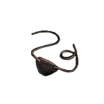
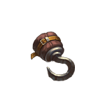
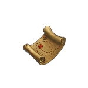
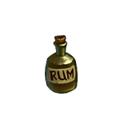
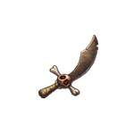

Получено: файл; исходный URL. Иллюстрация в отдельной статье ViveR_9 «Пиратская коллекция»; исходный файл без перекодирования. Авторство отдельно не установлено. Страница: источник.

Пиратская коллекция
Браузерная социальная версия; историческая статья; дата редакции неизвестна- Тип
- Коллекции
- Версия и дата
- Браузерная социальная версия; историческая статья; дата редакции неизвестна
Элементы коллекции















Данные по источнику · Браузерная социальная версия · историческая статья; дата редакции неизвестна
Предварительно: один материал, требуется сверка. Требуется сверка.
- Состав (источник Zombie-island)
- Повязка; Крюк; Карта сокровищ; Ром; Сабля.
- Награда (источник Zombie-island)
- 1 Подземный фонарь; 15 Костяная нога.
- Где копать Пиратскую коллекцию в Зомби Ферме лопатами
- Элитный букет; Марафонец; Флаг Марафонца.
- Пиратскую приносит Рыбак с мозгами
- Рыбак с мозгами.
- Пиратская коллекция - приз в рулетке
- Адмирал.
- Пиратскую коллекцию можно добыть Палочками в Мраморной пещере
- Палочка-выручалочка; Черный мрамор; Белый мрамор; Зеленый мрамор.
- Пиратская коллекция есть в сокровищах и ценностях
- Сундук Черепуши; Сюрприз бригады; Зелье; Коллекционер 2; Ракушка розовая; Ракушка оранжевая; Осьминог; Морской ёжик; Морской конёк; Сундук Чудовища 3; Пиратский; Флаг.
- Пиратскую коллекцию можно привезти с пиратских островов
- Пиратский сундук.
Данные по источнику · браузерная версия; платформа в ответе не уточнена · Дата на странице (формат не уточнён): 09/03/2015
Предварительно: Ответ справочного сайта; достоверность и независимость от других фанатских источников не установлены. Возможны различия редакций и версии.. Требуется сверка.
- Ответ источника
- Пиратская коллекция Зомби Ферма может быть найдена под флагом Марафонца и под декорацией Марафонец. Она состоит из повязки, крюка, карты сокровищ, рома, сабли. Иногда игроки получают ее из сундуков подземных ресурсов с черным, зеленым, белым мрамором. Бывает и так, что коллекцию могут добыть рыбаки, или она выпадает из яйца «Сюрприз Бригады», «Коллекционер 2», «Пиратский флаг». Некоторые пользователи выигрывали коллекцию в рулетке Адмирал.
Данные по источнику · браузерная версия; платформа не указана · дата редакции не установлена
Предварительно: Содержимое списка: изображения и колонки могут терять смысл при извлечении текста; отдельная страница и дата не проверены. Подписи alt иногда ошибочны.. Требуется сверка.
- Текст карточки из каталога
- Подземный фонарь и 15 костяных ног Повязка Крюк Карта сокровищ Ром Сабля Где копать: Приносит Рыбак за зомбаксы в вёдрах, выпадает в Зелёном мраморе в Мраморной пещере, Марафонец, Флаг Марафонца
Данные по источнику · браузерная версия; на сайте указана игра ВКонтакте · дата редакции не установлена
Предварительно: Исторический текст; сильно совпадает со справкой Zommbie.at.ua, независимость не доказана. Отрицания и доступность могут измениться с патчем.. Требуется сверка.
- Где искать по странице «Зомбастики»
- Источник утверждает, что выкопать нельзя и коллекцию приносит зомби-рыбак; другие источники называют места копания. Возможно различие патча или ошибка.
Данные по источнику · Браузерная версия ВКонтакте; редакция не установлена · 05.10.2018 — дата публикации; дата последующей редакции неизвестна
Предварительно: Фанатская статья: вероятность находки не указана; независимость от других справочников не установлена.. Требуется сверка.
- Состав
- Повязка; Крюк; Карта сокровищ; Ром; Сабля.
- Обмен
- 1 Подземный фонарь и 15 Костяных ног.
- Рулетки и находки
- Палатка горожан, Разрушенный корабль, Гроза Сильвера, Адмирал; среди ценностей Ящик из-под Черепуши, Пиратский подарок, Сундук Чудовища, Морской ёжик, Морской конёк, Зелье, цветные ракушки, Сабля пирата и Коллекционер 2. Перечислен Рыбак с мозгами.
- Палочками
- Октавий, Пончик-победитель, подземные варианты чёрного мрамора 1 и 2, зелёного 1 и 2, белого 1 и 3.
- Лопатами у друзей
- Флаг Марафонца, Мастер урожая, Марафонец, Весеннее настроение и Весенняя ваза.
- Применение
- Деревянная лодка, Идол Воды и названные источником задания; количества не указаны.
- Расхождение источников
- Zommbie.at.ua в публикации 10.01.2014 утверждает, что эту коллекцию нельзя выкопать и её приносит рыбак. ViveR_9 и Zombie-island перечисляют места раскопок. Дата последующей редакции каждого источника и версия игры неизвестны; различие может быть связано с изменениями игры или ошибкой источника.
Данные по источнику · историческая браузерная версия, платформа не указана · 10.01.2014 — дата в каталоге; дата редакции материала неизвестна
Предварительно: Фанатский список без вероятностей и уточнения площадки; независимость от других источников не установлена.. Требуется сверка.
- Где искать по списку сайта
- Данную коллекцию невозможно выкопать, её приносит зомби рыбак
- Оговорка
- Список может относиться к разным условиям, инструментам и периодам игры; не доказывает гарантированное выпадение. Заявления «только» и «невозможно» относятся лишь к времени и версии источника.
Данные по источнику · историческая браузерная игра; площадка не уточнена · 28.02.2013 — дата каталога; редакция неизвестна
Предварительно: Проверен текст в каталоге сайта; вероятность выпадения не указана. Исторические версии и даты могут различаться; списки и награды требуют сверки, независимость сайта от других справочников не установлена.. Требуется сверка.
- Награда в источнике
- 1 подземный фонарь и 15 костяных ног
- Места в источнике
- Рыбак, зелёный мрамор в Мраморной пещере, Марафонец и Флаг Марафонца. Исторический список противоречит утверждению ряда других справок о невозможности выкопать коллекцию; различие версии или ошибка не установлены.
Связанные сущности
нет проверенных связей — требуется сверка.
Источники
- прочитано: Zombie-island.moy.su; проверка 2026-11-21
- FatalGame: прочитан отдельный ответ; дата на странице 09/03/2015
- ZOMBIA: прочитана карточка в списке
- Ссылка на отдельную страницу; отдельно не проверена
- Зомбастики: прочитана соответствующая строка; возможная копия другого справочника
- ViveR_9: отдельная статья коллекции
- Zommbie: противоположное утверждение о раскопках
- zommbie.at.ua: где искать коллекции
- zombi-ferma.ucoz.net: каталог коллекций